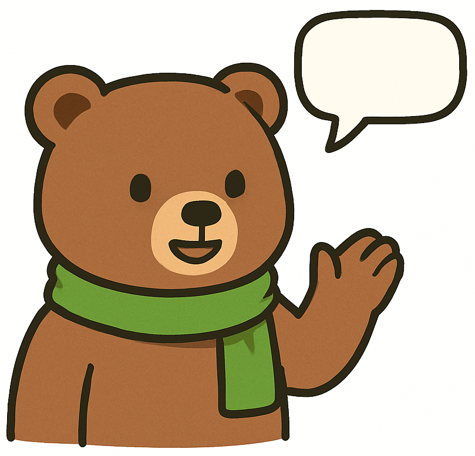
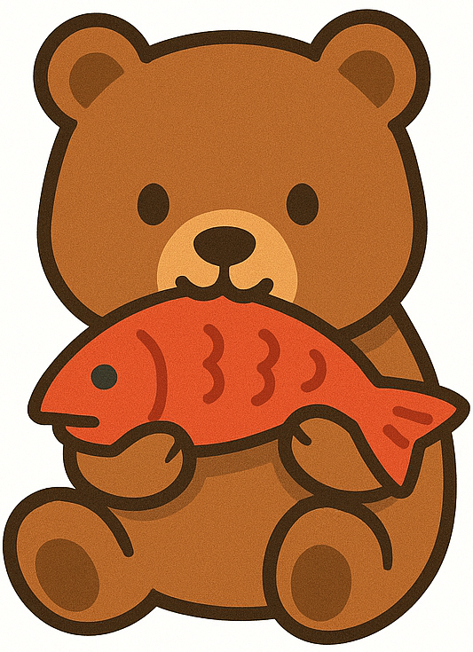

What is German From the Get-GO?
It's a new way to jump-start your language skills without having to slog through the boring bits!
"Hello." "My name is..." "Please and thank you."
Of course these tid-bits of language are important, but let's be real - that's what phrase books are for!
German From the Get-GO is designed to get you understanding and using the language right away, giving you the building blocks to create with the language, not just translate!
How is German From the Get-GO different from other courses?
You've probably used other language-learning apps before. Like that one with the owl. Yeah, you know the one!
German From the Get-GO is different from most other apps because they use a translation-based approach. Their model is "here's a sentence - now how do you say it in another language?"
German From the Get-GO, on the other hand, focuses on what's called "comprehensible output". It gives you a question, and you use what you've learned to answer it. This gets you creating your own sentences and recalling your knowledge in more realistic scenarios - which leads to you putting your skills to better use!
How do we know German From the Get-GO works?
The content from German From the Get-GO isn't just hobbled together by AI.
It's been designed by an actual German instructor who studied foreign language aquisition - one who has lived, worked, and taught abroad! The methods used in this course are student-tested and approved, so you're guaranteed to learn and still have some fun doing it!
